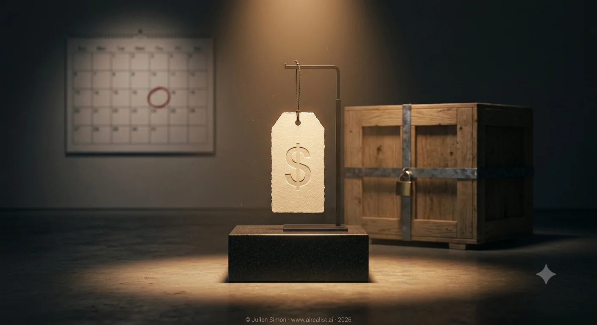

On July 16, Moonshot AI announced Kimi K3, a 2.8-trillion-parameter model it bills as the first open model in the 3-trillion-parameter class. The launch post is unusually candid for the genre. It states plainly that K3 trails the two strongest proprietary models, Claude Fable 5 and GPT-5.6 Sol, and its limitations section concedes “a noticeable gap in user experience” against both [1]. The press coverage was less careful: within hours, headlines had K3 pushing Chinese AI “into Fable-level territory” [2].
Two numbers in the launch matter more than any benchmark score. The first is a price:$15 per million output tokens, the most expensive model a Chinese lab has ever shippedand nearly four times Moonshot’s own K2.6 [3]. The second is a date: the full weights are promised by July 27, 2026 [1]. Until then, every measurable claim about K3 passes through an API endpoint operated by Moonshot. The score that matters this week is not an Elo. It is a date.
Call the window between those two events the Checkpoint Gap: the period when a model is priced, benchmarked, and covered as open, while the artifact that would let anyone verify it sits on the vendor’s servers. The industry has had a recent, expensive lesson in what can live inside that window. In April 2025, Meta submitted a chat-tuned variant of Llama 4 Maverick to the LMArena leaderboard, where it briefly ranked second. When the public weights were tested, the released model landed around 32nd, and LMArena rewrote its submission policies with an unusually direct rebuke [4]. The benchmarked model and the shipped checkpoint were not the same thing. Nobody outside Meta could have known before the weights landed.
Nothing suggests Moonshot is running that play. The company’s record argues the opposite: Kimi K2 shipped open under a modified MIT license in July 2025, and K2.6 followed in April 2026 [5]. Moonshot’s benchmark footnotes are also more transparent than most Western launches, and they repay reading. K3 is evaluated with Moonshot’s own KimiCode evaluation harness on most coding benchmarks, while rivals run under Claude Code, Codex, or their best score across harnesses. Fable 5’s results may reflect a fallback to Opus 4.8 when it refuses a task. K3 itself currently runs at a single reasoning effort, its highest [6]. Where the harness effect can be isolated, it looks small: on DeepSWE, K3 scores 67.5 under KimiCode and 67.3 under the official leaderboard’s harness [6]. These are disclosed choices, not hidden ones. But disclosure is not verification. Until July 27, good faith and the Llama 4 play are indistinguishable from the outside, and the correct reading posture is the same for both.
What independent evidence exists places K3 near the frontier, not at it — and even that evidence was gathered through Moonshot’s API. Artificial Analysis scores K3 at 57 on its Intelligence Index, behind Claude Fable 5 (around 60) and GPT-5.6 Sol (around 59) and comparable to Opus 4.8, and its private knowledge-work evaluation ranks K3 second only to Fable 5 [7]. Third place at launch from a lab that will hand you the weights is a remarkable result. It is not the frontier moving to Beijing. And note the tense the evaluator itself uses: once available, AA writes, K3 “would clearly lead” the open-weight field [7]. The conditional is doing the work. Even the independent scorekeeper is writing from inside the gap.
The price is where this launch stops resembling every previous Chinese release. DeepSeek’s pitch never depended on benchmark verification: at $0.87 per million output tokens, 90% of the frontier was a bargain even if the numbers flattered [8]. K3 at $15 has exited the Chinese price war entirely. On the rate card, it is 17 times DeepSeek V4, level with Anthropic’s Sonnet tier, and 30% of Fable’s $50 [3][8]. On cost per completed task, a separate metric, AA’s estimate lands K3 at $0.94 — beside GPT-5.6 Sol at $1.04, half of Opus 4.8 at $1.80, and three times its open-weight peer GLM-5.2 [7].
Both metrics say the same thing: this model is priced with the frontier, not against it. Nobody pays that premium for third place unless the table holds. The rate card is Moonshot’s self-assessment denominated in dollars, and it converts the benchmark table from marketing garnish into the product justification. The Checkpoint Gap matters more for K3 than for any Chinese launch before it, because this is the first one to ask frontier prices for claims nobody can yet check.
The gap closes on schedule, making the launch falsifiable in a way most are not. Three tests, all dated.
Do the weights ship by July 27, and does the released checkpoint match what the API has been serving?
Do independent evaluations under a neutral harness reproduce the launch table?
Where does third-party pricing settle? On that last test, temper expectations of a DeepSeek-style collapse toward the hosting floor. Moonshot recommends serving K3 on supernodes of 64 or more accelerators, so price competition will come from large inference providers, not from tiny GPU resellers [1]. If the $15 holds once alternatives exist, the market has accepted the frontier positioning. If it collapses, the price will launch in the theatre.
Did the frontier move to China? Not on the evidence available today, and Moonshot’s own launch post doesn’t claim it did. What moved is the posture. DeepSeek priced like it had something to prove. Moonshot is pricing like it has already proved it, eleven days before anyone can check.
Notes
[1] Moonshot AI,“Kimi K3: Open Frontier Intelligence”, July 16, 2026. The weights date, API pricing ($0.30/MTok cache-hit input, $3.00/MTok cache-miss input, $15.00/MTok output), the concession that K3 trails Claude Fable 5 and GPT-5.6 Sol, the user-experience limitation, and the recommendation to deploy on supernodes of 64 or more accelerators all appear in the launch post. Vendor-published.
[2] Fortune,“Moonshot’s Kimi K3 pushes Chinese AI into Fable-level territory”, July 16, 2026.
[3] Simon Willison,“Kimi K3, and what we can still learn from the pelican benchmark”, July 16, 2026 — identifies K3 as the most expensive model released by a Chinese lab to date, at the level of Anthropic’s Claude Sonnet series. Kimi K2.6 pricing ($0.95/MTok input, $4/MTok output) perMoonshot’s platform documentation.
[4] The Register,“Meta accused of Llama 4 bait-n-switch to juice LMArena rank”, April 8, 2025. LMArena stated Meta’s interpretation of its submission rules “did not match what we expect from model providers” in its April 2025 policy update; the released Maverick’s subsequent placement around 32nd is documented inThe Decoder’s follow-up coverageof the leaderboard.
[5] Moonshot AI,“Kimi K2: Open Agentic Intelligence”, July 2025, and“Kimi K2.6”, April 2026.
[6] Moonshot K3 launch post [1], benchmark footnotes 1–8. Harness assignments per benchmark, the Fable 5 fallback condition, the single (maximum) reasoning effort at launch, and the DeepSWE dual-harness scores (67.5 under KimiCode; 67.3 under the official leaderboard’s mini-SWE-agent harness) are all disclosed there.
[7] Artificial Analysis,Kimi K3 launch evaluationandmodel page, July 16, 2026. Intelligence Index: K3 at 57, behind Claude Fable 5 and GPT-5.6 Sol and comparable to Opus 4.8 and GPT-5.5. AA-Briefcase (private long-horizon knowledge work): Elo 1547, second behind Claude Fable 5. Cost per task is AA’s evaluation-derived estimate, not a market price: K3 $0.94, GPT-5.6 Sol $1.04, Claude Opus 4.8 $1.80, GLM-5.2 $0.32. One counterweight AA also reports: K3 generated 130M output tokens across the Index against a 63M median for comparable reasoning models, so on verbose workloads the rate card understates effective cost — a consequence of the single maximum reasoning effort available at launch. The open-weight comparison (”would clearly lead” GLM-5.2 and DeepSeek V4 Pro) is AA’s own phrasing, stated in the conditional pending the weight release.
[8] Fortune [2] for comparative output-token pricing: DeepSeek V4 at $0.87, z.ai’s GLM-5.2 at $4.40, and Claude Fable at $50 per million output tokens.